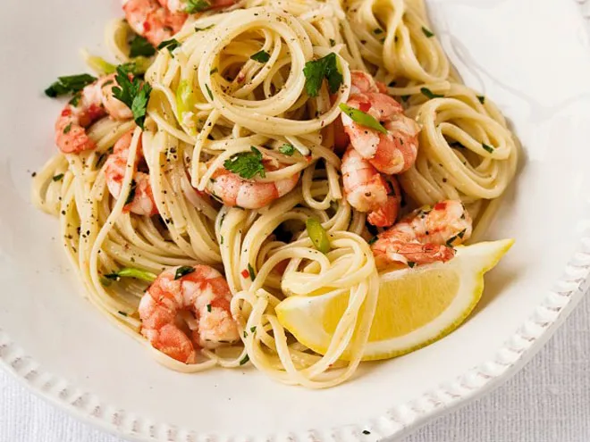

Click here to return to the homepage
Prawn and Garlic Spaghetti
A quick and easy meal for when you don't want to
spend hours in the kitchen!

Description
This quick and easy spaghetti is a classic, and only takes 15 minutes!
Ingredients
- 75g per person spaghetti or pasta of your choice
- 4 cloves garlic
- 1 tbsp butter
- 1 white onion
- 2 tbsp olive oil
- 1 lemon
- 1 bunch fresh parsley
- 250g king prawns
- salt, pepper and chilli flakes to taste
Method
- Set the pasta to boil in a saucepan of salted water
- Whilst the pasta is cooking, dice your onions and garlic,
and fry over medium heat with the prawns. Add the tbsp of butter
and a squeeze of lemon juice.
- When the pasta is al dente, remove from the water and add to the
pan with the onions, garlic and prawns. Roughly chop the parsley, and add
salt, pepper and chilli flakes to taste.
- Add some of the pasta water and allow to simmer for 2-3 minutes, then remove
from the heat and serve with a wedge of lemon, garnish of parsley, and drizzle
of olive oil.